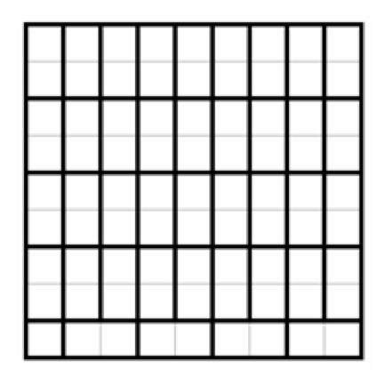

A game takes place on a squared 9 × 9 piece of checkered paper. Two players play in turns. The first player puts crosses in empty cells, its partner puts noughts. When all the cells are filled, the number of rows and columns in which there are more crosses than zeros is counted, and is denoted by the number K, and the number of rows and columns in which there are more zeros than crosses is denoted by the number H $($ 18 rows in total $)$. The difference B = K - H is considered the winnings of the player who goes first. Find a value of B such that
1$)$ the first player can secure a win of no less than B, no matter how the second player played;
2$)$ the second player can always make it so that the first player will receive no more than B, no matter how he plays.
One of the possible strategies of the first player: with his first move he places a cross at the center of the board; then for every move of the second player in any cell, it responds with a move in a cell symmetric with respect to the center. This is possible, since symmetry is violated each time by the second player. In the final position in each pair of cells, symmetrical with respect to the center, there is a cross and a nought. Therefore, in the central row and in the central column, there are more crosses than zeros; and each row $($ column $)$ that does not pass through the center corresponds to a symmetrical row $($ column $)$, with one of them having more zeros than crosses and one of them having fewer zeros than crosses. Thus, with this strategy, the first player's win is equal to 2. Now we indicate the strategy of the second player. If he has the opportunity to occupy a cell that is a symmetrical $($ relative to the center $)$ cell, which has just been occupied by the first player then it does so. Otherwise, he makes any move. With such a strategy, after the turn of the second player, the set of occupied cells is either symmetrical $($ until the first has occupied the center $)$, or differs from the symmetrical one by exactly one cell. In this case, in each pair of occupied symmetrical cells there will be one cross and one zero. With his last move, the first player will have to create the position described in the previous paragraph, and his winnings are again 2.
We divide the board into parts as shown in the figure. The strategy of the first: take the first lower left corner, and then go to the same part of the board, where the second one went before it.

The strategy of the second: if possible, take a cell in the same part of the board, where the first player went first; if it is impossible - any move. If at least one of the players adheres to the strategy indicated for him, then in the end in the lower left corner there will be a cross, and in each of the other parts of the board there will be an equal number of noughts and crosses $($ for reasons similar to those stated in the first solution: after each move of the second player in all filled dominoes there will stand a cross and a nought, and, perhaps, in one there is just a nought $)$. Consider the two upper rows. In total, they contain 9 crosses and 9 noughts $($ since they are divided into 9 "dominoes" $)$. Therefore, in one of them there are more crosses, in the other - more zeroes. A "Draw" is also achieved in the third and fourth, ..., seventh and eighth rows from the top, and in the bottom rows the first “wins” $($ it has 5 crosses and 4 noughts $)$. The situation is similar in the columns $($ pairs of neighboring columns, starting counting from the right, also consist of 9 "dominos" $)$.
B = 2.
5 points